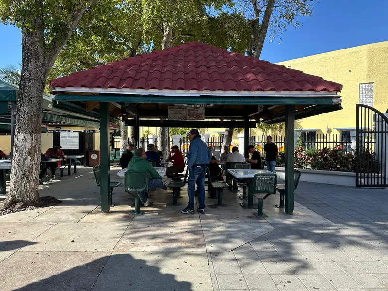
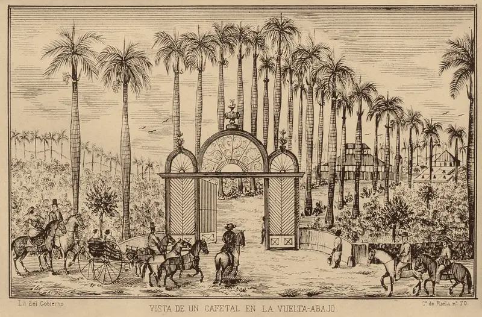
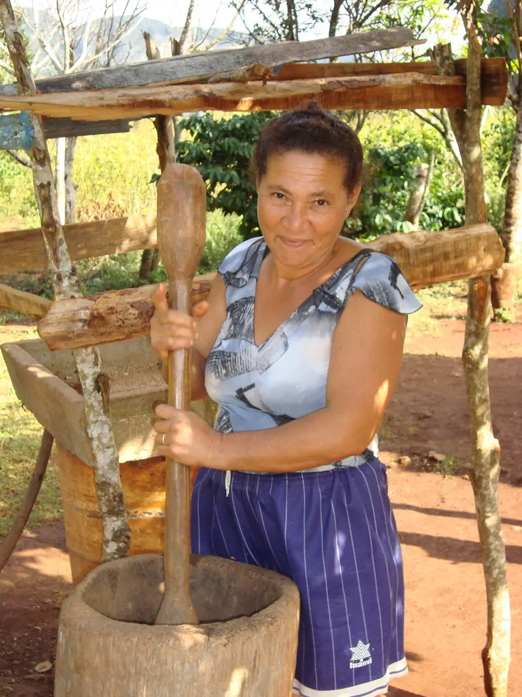
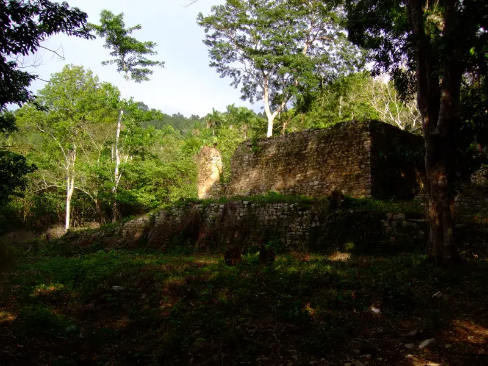
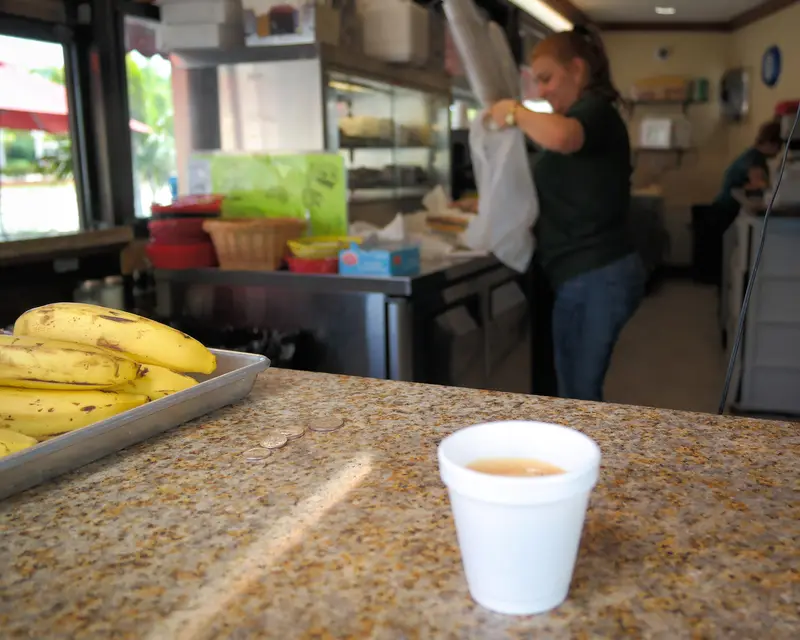
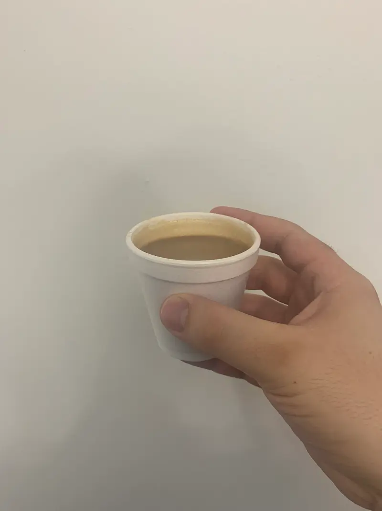
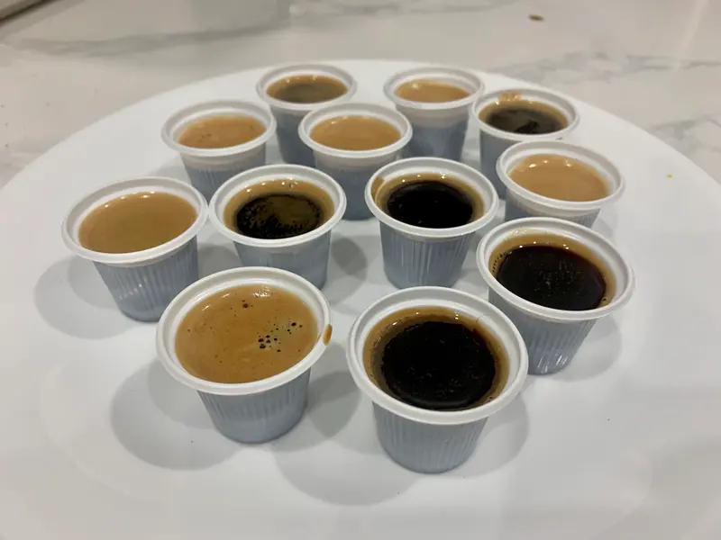
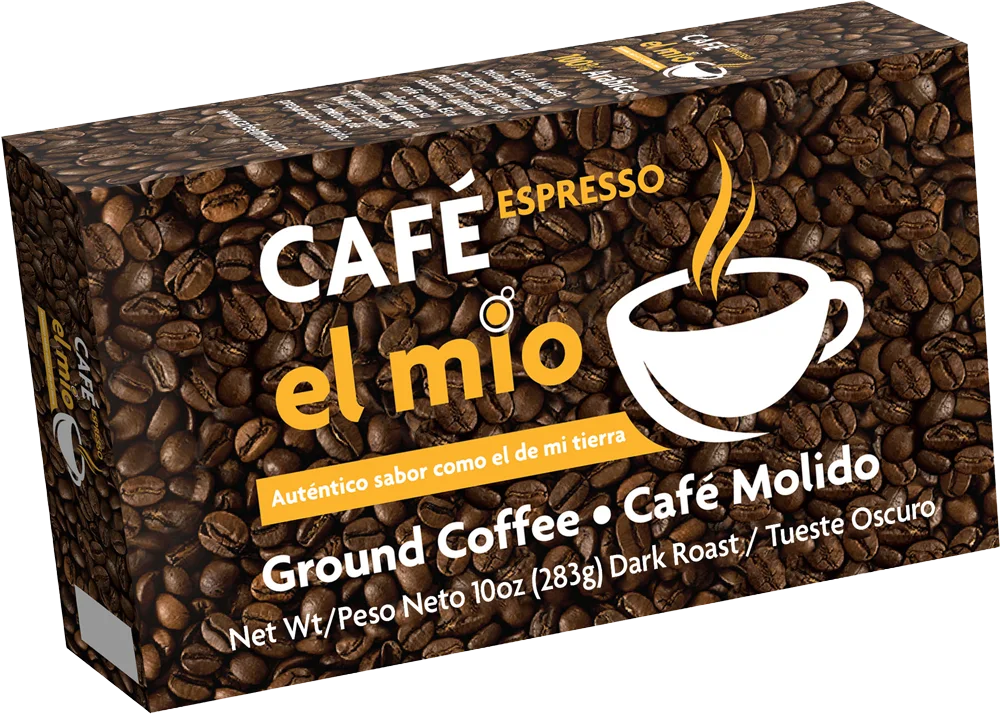

Un café que es mío
El Mío es café cubano tostado y empacado en Miami. Esta es la historia de dónde viene su sabor y de cómo llegó a tu mesa.

El café de la tierra
Según la historia más contada, el café llegó a Cuba en 1748. Entre finales del siglo XVIII y comienzos del XIX, los cafetales se extendieron por las montañas del oriente de la isla y por la Sierra del Rosario, en el occidente.
Los primeros cafetales del sureste cubano son hoy Patrimonio de la Humanidad. Y en el campo, por generaciones, el café se tostó en casa y se molió en pilón, el mortero de madera que todavía se ve en las fincas.



En el campo se tostaba en cazuela, al fuego de leña. El cariño sigue siendo el mismo.
La ventanita
En Miami el café cubano se toma de pie, en la ventanita: ese mostrador que da a la calle donde se pide un cafecito, un cortadito o una colada para la oficina. La colada viene en un vaso con tacitas para repartir, porque el café cubano se comparte.
Y a las 3:05 de la tarde, por el código de área 305, la ciudad hace su pausa del cafecito.



Nace El Mío
En abril de 2021, el presentador cubano Carlucho anunció El Mío en su programa de televisión: un café cubano tostado y empacado en Miami, para la comunidad de aquí y para quien lo quiera probar en cualquier parte.
«Un café que es mío y quiero que usted lo haga suyo.»
Gente de Zona le puso melodía al lanzamiento, y con el concurso El Mío la gente compartió fotos, videos y coreografías tomando café.

Tostado y empacado en Miami
El Mío sigue siendo el mismo: 100 % arábica, tueste oscuro, molido y en su paquete de 10 onzas.
Ahora lo acompañan cafés de un solo origen de Colombia, Costa Rica y Perú, una mezcla africana para espresso, muestras para probar y matcha.